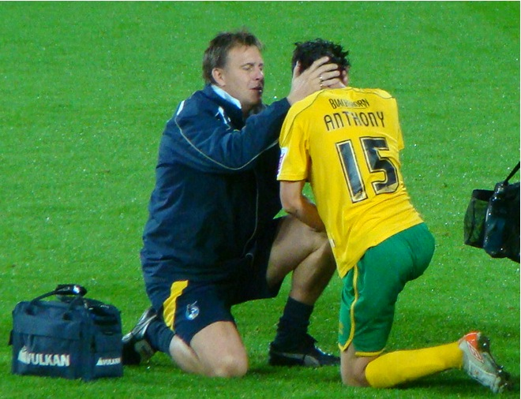

What do Sports and Exercise Physiotherapists do?
"A recognized professional who demonstrates advanced competencies in the promotion of safe physical activity participation, provision of advice, and adaptation of rehabilitation and training interventions, for the purposes of preventing injury, restoring optimal function, and contributing to the enhancement of sports performance, in athletes of all ages and abilities, while ensuring a high standard of professional and ethical practice."
Sports and exercise physiotherapists work in a wide variety of settings and form a key part of the sport and exercise medicine community. Many work with active recreational athletes in private practice or clinic settings. They can also be involved in social and club-level sports and attend training sessions. Sports and exercise physiotherapists often work in the elite athlete setting in competitive and professional sports, working and travelling with elite individual athletes or teams, and integrating their services with other medical professionals, coaches, strength and conditioning personnel and other support staff. Sports and exercise physiotherapists are also actively involved within various sporting organisations to coordinate physiotherapy services, injury prevention, rehabilitation and injury surveillance programmes. Sports physiotherapists are trained to address global health issues posed by communicable and non-communicable diseases by promoting evidence-based exercise and physical activity interventions. A core competency of sports physiotherapists is implementing exercise protocols for injury prevention and rehabilitation—skills that can be effectively adapted to address broader health challenges on a global scale.
